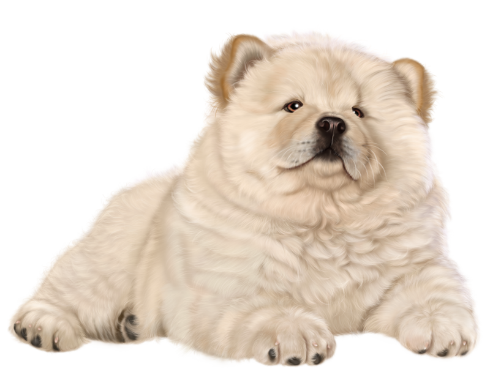

The inner thoughts of a cute kitten are likely filled with curiosity, wonder, and a touch of mischief. From the moment they open their eyes to the world, kittens are on a constant quest to explore and make sense of their surroundings.


The adorable world of a cute puppy is filled with boundless enthusiasm, unconditional love, and a genuine curiosity about everything around them. From the moment they open their bright eyes and wobble on unsteady legs, puppies embark on a journey of discovery.